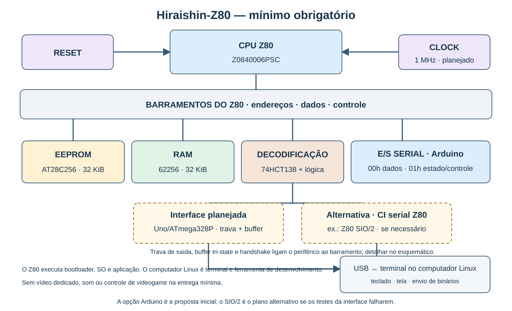

Projeto Garagem · guia versão 1.2 · escopo mínimo consolidado
Hiraishin-Z80: arquitetura do campo 4
Guilherme de Oliveira Ribeiro · Trabalho individual
Compromisso: núcleo Z80, boot e SO próprios, aplicação simples e terminal serial no Linux. Sem vídeo próprio, som ou gamepad na entrega obrigatória.
Prioridade de desenvolvimento: primeiro o mínimo entregável
Etapa 1 — núcleo funcional e software próprio
Peças já compradas
Compra informada por Guilherme em 17/10/2026. Recebimento, inspeção e testes ainda não foram informados. Os modelos abaixo são os discutidos na conversa e devem ser conferidos na marcação das peças recebidas.
| Peça | Quantidade | Identificação discutida | Estado |
|---|---|---|---|
| Processador Z80 | 1 | Z0840006PSC, DIP-40, NMOS | Comprado; marcação e funcionamento a conferir. |
| RAM principal | 1 | KM62256DLP-7, SRAM de 32 KiB, DIP-28 | Comprada; marcação e funcionamento a conferir. |
| Protoboards | 2 | 830 pontos cada | Compradas; verificar contatos e continuidade dos trilhos antes de usar. |
Este registro não é a lista completa do núcleo nem confirma outras compras. EEPROM, clock, alimentação, reset, decodificação, serial e materiais auxiliares continuam sujeitos à conferência da lista e do esquema antes de aquisição.
Z80 + ROM + RAM + clock + reset + decodificação + periférico serial Arduino
↕
Terminal no Linux
Essa é uma ligação funcional, não uma cadeia elétrica de componentes. Na implementação, os chips se conectam pelos barramentos e sinais de seleção.
- Partida: reset válido, busca em 0000h e bootloader próprio executando na ROM.
- Boot: inicializar pilha e serial, mostrar mensagem, copiar o SO da ROM para a RAM e transferir o controle para 8000h.
- SO mínimo próprio: apresentar prompt, ler comandos, escrever respostas e carregar um programa pela serial em C000h, verificando tamanho, faixa de destino e integridade antes de executá-lo.
- Programa-vitrine inicial: programa interativo em texto — por exemplo, um jogo de adivinhação. O exemplo ainda não é uma escolha definitiva do aplicativo. A execução deve demonstrar entrada e saída e, idealmente, retornar ao SO.
- Entrega física: validar o núcleo em protoboard e produzir esquemático, layout e PCB do núcleo, montada e funcionando como alvo para atender plenamente ao critério de hardware.
- Entrega acadêmica: proposta, histórico contínuo no Git, evidências de testes, artigo, pôster/apresentação conforme enunciado e defesa oral. Construir só o núcleo eletrônico não encerra o trabalho.
Papel do computador com Linux: desenvolver e montar os binários, mostrar o terminal e enviar arquivos. No protótipo físico, o Z80 executa o bootloader, o SO e a aplicação; o computador de apoio não processa a aplicação no lugar do Z80.
Critério para considerar o mínimo pronto
- Ligar ou reiniciar a máquina e observar boot e prompt sem carregar manualmente o SO por um depurador.
- Executar ao menos um comando do SO.
- Enviar, carregar e iniciar um programa com o nosso próprio software.
- Interagir com o programa pela serial, obtendo respostas visíveis.
- Repetir o procedimento com estabilidade e guardar logs, vídeo e resultados dos testes.
- Ter o núcleo validado fisicamente, a PCB e a documentação preparados; emulação sozinha não equivale à entrega física.
Etapa 2 — diferenciais, sem bloquear a entrega principal
Somente após concluir o mínimo obrigatório e se houver tempo, poderão ser desenvolvidos o Hiraishin Runner e os módulos TMS9918A/VRAM/HDMI, SN76489AN e 82C55A/controle PS2. O compromisso inicial é uma aplicação interativa simples em texto, ainda a escolher; runner e animação não são requisitos desse marco. Cada diferencial terá teste isolado antes da integração. Se houver risco ao prazo, manter a entrega mínima funcional e documentada, sem iniciar ou prometer as expansões.
As janelas de E/S de vídeo, som e GPIO continuam reservadas no mapa, mas ficarão sem dispositivo conectado na etapa 1. O software mínimo não deve acessá-las. Não é necessário comprar nem montar esses módulos para iniciar o núcleo.
Como vamos testar antes da bancada
- Logisim: lógica de seleção de ROM/RAM e periféricos, leitura/escrita e prevenção de seleção simultânea. Não reconstruir a CPU Z80 dentro dele.
- Z80Ex: base escolhida para a emulação do processador. Ainda será necessário implementar o modelo da nossa ROM, RAM e interface serial definida; não é um simulador pronto de todo o Hiraishin-Z80.
- Protoboard: conferir alimentação, clock, reset, níveis e temporização reais. A simulação de software não aprova o circuito elétrico.
Aprendizado e IA: produzir, revisar, entender, criticar e testar cada entrega. Avançar exige conseguir explicar o que foi incluído; documento ou código gerado não comprovam domínio. Compras, energização e fabricação exigem revisão prévia específica.
Escopo mínimo, campos 2/7/8 e cronograma de trabalho. As datas desse plano são metas a revisar com a chegada das peças e o prazo real da PCB, não garantia de conclusão.
1. Texto para o campo 4 da proposta
O Hiraishin-Z80 utilizará uma CPU Z80 Z0840006PSC, com barramento de dados de 8 bits e endereços de 16 bits, EEPROM paralela AT28C256 de 32 KiB em 0000h–7FFFh e SRAM 62256 de 32 KiB em 8000h–FFFFh. A ROM conterá o bootloader e a imagem do sistema operacional; após o reset em 0000h, o boot inicializará a interface serial, copiará o sistema para a RAM e transferirá sua execução para 8000h.
A E/S será isolada do espaço de memória e acessada por IN/OUT. Na versão proposta, o Arduino Uno (ATmega328P) fará a ponte entre USB/terminal Linux e o Z80: o Z80 acessará registradores paralelos de dados e estado em portas de E/S; uma trava de saída e um buffer tri-state farão a interface com o barramento, e o Arduino cuidará do envio/recepção serial USB. O decodificador selecionará essa interface. Se a comunicação não for confiável no prazo, a contingência é um CI serial Z80 dedicado, como o SIO/2, mantendo a mesma função para o software. O computador Linux fornecerá teclado, tela e binários; o Z80 executará o SO e a aplicação. A entrega obrigatória não inclui vídeo dedicado, som ou controle de videogame.
O clock inicial da CPU será de 1 MHz, gerado por oscilador ativo de 5 V e driver compatível com a entrada de clock da CPU NMOS. A decodificação utilizará A15 e sinais de acesso à memória para selecionar ROM/RAM; um 74HCT138, com A7–A5 e qualificação de E/S, selecionará as janelas de periféricos. Portas HCT complementarão a lógica de leitura/escrita e de exclusão de refresh/reconhecimento de interrupção. Os mapas e o diagrama abaixo integram esta definição.
Este bloco é a resposta técnica; o restante do documento explica e detalha sua fundamentação. O PDF final da proposta terá os 13 campos e precisará ser condensado ao limite do professor.
2. Diagrama atual para o campo 4 — mínimo obrigatório
Abrir a imagem do núcleo em tamanho completo
A proposta define o Arduino Uno/ATmega328P como periférico paralelo serial, com portas de dados/estado, trava, buffer tri-state e handshake; o SIO/2 é a contingência. A figura é de arquitetura: o esquemático ainda detalhará pinagem, temporização e condicionamento elétrico.
Diagrama completo anterior: preservado como histórico das possibilidades de expansão; não representa mais a lista de montagem obrigatória.

3. Mapa de memória: onde ficam os bytes
A CPU enxerga 65.536 posições, cada uma com um byte. Dividimos o espaço em duas metades, sem bancos de memória nem troca de ROM/RAM.
| Faixa | Tamanho | Dispositivo | Uso definido |
|---|---|---|---|
| 0000h–3FFFh | 16 KiB | Primeira metade da EEPROM | Boot, vetores e rotinas de diagnóstico. A primeira instrução fica em 0000h. |
| 4000h–7FFFh | 16 KiB | Segunda metade da mesma EEPROM | Imagem inicial do SO, montada para executar a partir de 8000h e copiada para lá pelo boot. |
| 8000h–BFFFh | 16 KiB | SRAM | SO em execução, seus dados e buffers. |
| C000h–EFFFh | 12 KiB | Mesma SRAM | Programa-vitrine carregado pela serial, incluindo dados do programa. |
| F000h–FFFFh | 4 KiB | Mesma SRAM | Área reservada à pilha e trabalho auxiliar. SP inicial em FFFEh; a pilha cresce para endereços menores. |
Não são cinco chips: são cinco regiões de software em apenas dois chips de memória. O início do programa será C000h. O formato de carga incluirá tamanho, endereço e verificação; sua implementação pertence ao desenvolvimento do SO.
Os 16 KiB de VRAM são separados desses 64 KiB. A CPU transfere dados ao VDP pelas portas, e o VDP acessa sua própria memória. O circuito de VRAM será um módulo dedicado com adaptação SRAM, não uma ligação direta de uma 62256 aos pinos de DRAM do TMS9918A.
4. Mapa de E/S: endereços para falar com circuitos
Os mesmos números não confundem memória e periféricos: a CPU usa sinais diferentes para identificar cada tipo de acesso. Os endereços abaixo são portas de E/S, não posições dentro da RAM.
| Janela física | Endereços usados pelo software | Destino e função |
|---|---|---|
| 00h–1Fh | 00h = dados; 01h = estado/controle | Interface Arduino–Z80: dados recebidos/enviados e flags de pronto/ocupado. A janela seleciona o periférico; o esquema definirá trava, buffer e sinais. |
| 20h–3Fh | 20h / 21h | TMS9918A: porta de dados / porta de controle na escrita e status na leitura, usando A0. |
| 40h–5Fh | 40h, somente escrita | SN76489AN: envio dos comandos de som. |
| 60h–7Fh | 60h, 61h, 62h, 63h | 82C55A: portas A, B, C e controle, selecionadas por A1–A0. Saídas de comando/clock/seleção e entradas de dados do gamepad. |
| 80h–FFh | Não utilizados | Reservados a expansão; nenhum dispositivo da versão 1.0 responde. |
Por que existem janelas maiores?
Para reduzir a lógica, o decodificador usa apenas A7–A5 para escolher cada periférico. Bits intermediários não usados provocam espelhamento: o software usará as portas canônicas 00h (dados) e 01h (estado/controle), sem instalar outro dispositivo nos endereços espelhados.
Também ignoraremos A15–A8 em acessos de E/S; portanto há espelhos no espaço de E/S de 16 bits do Z80. Isso é uma escolha explícita do nosso circuito, não uma limitação de endereçamento do processador.
O controle será consultado pelo Z80 através do 82C55A, com protocolo implementado no nosso software. Não é teclado PS/2. Haverá regulação e tradução de níveis entre o domínio de 5 V e o controle. A pinagem e a tensão do gamepad real serão verificadas antes de ligá-lo; vibração não faz parte da versão inicial.
5. Como o circuito escolhe quem responde
“Decodificar endereço” significa reconhecer uma faixa e habilitar seu destino. Não é decodificar a instrução: essa outra tarefa acontece dentro da CPU.
Memória: A15 divide o espaço
Se /MREQ = 0 e /RFSH = 1:
A15 = 0 → seleciona EEPROM (0000h–7FFFh)
A15 = 1 → seleciona SRAM (8000h–FFFFh)
Se /RD = 0 → o chip selecionado fornece o byte.
Se /WR = 0 → somente a SRAM selecionada pode gravar.
A0–A14 chegam às duas memórias; A15 participa da seleção. A EEPROM terá /WE mantido inativo e será gravada externamente. Qualificar /RD e /WR impede dirigir dados ou escrever durante ciclos inadequados; excluímos explicitamente refresh da seleção normal.
E/S: um 74HCT138 escolhe uma entre oito janelas
Habilitar decodificador quando /IORQ = 0 e /M1 = 1. Entradas A, B, C do 74HCT138 ← A5, A6, A7 do Z80. Y0 → interface serial Arduino (00h–1Fh) Y1 → vídeo (20h–3Fh) Y2 → som (40h–5Fh, qualificado por escrita) Y3 → 82C55A (60h–7Fh) Y4–Y7 → sem dispositivo conectado.
As saídas do 138 são ativas em zero. A qualificação por /M1 impede selecionar periféricos num reconhecimento de interrupção. Portas 74HCT04, 74HCT32 e/ou 74HCT00 implementarão inversões e combinações; a quantidade será determinada pelo esquemático, não pelo desenho de blocos. Na porta 00h, escrita envia e leitura recebe dados; na porta 01h, leitura consulta flags de estado e escrita configura/limpa o controle da interface.
A lógica HCT tem níveis de entrada compatíveis com saídas TTL do Z80 NMOS. O fan-out, a carga dos barramentos e eventual necessidade de buffers serão verificados. O som exigirá respeito a READY e à duração da escrita: implementaremos extensão de ciclo por /WAIT e lógica temporizada, não apenas um fio improvisado entre os dois sinais.
6. Clock, reset e implementação
- CPU: 1 MHz inicial, oscilador ativo de 5 V e driver com níveis e bordas compatíveis com o Z0840006PSC NMOS. Um cristal passivo não gera esse sinal sozinho. Não usaremos clock manual nem parada de clock como técnica de depuração dessa CPU.
- Serial: referência de 1,8432 MHz, inicialmente 9.600 baud, 8 bits, sem paridade e um bit de parada; consulta de status por software. O adaptador USB–TTL deverá ter níveis compatíveis, não sinais RS-232 diretamente nos CIs.
- Vídeo: referência de 10,738635 MHz, circuito de VRAM e saída composta no módulo do TMS9918A; conversão externa para HDMI. O conversor será testado com o sinal real antes da PCB.
- Som: referência de 3,579545 MHz para o SN76489AN; saída condicionada para amplificação. Não ligar alto-falante diretamente ao PSG.
- Reset: circuito de partida e botão; manter /RESET ativo com clock estável pelo tempo exigido. A polaridade de reset dos periféricos será adaptada. Antes de usar pilha, o boot inicializa SP na SRAM.
- Alimentação: núcleo regulado a 5 V, GND comum, desacoplamento por CI e regulação específica para o controle. Fonte e distribuição dimensionadas pelo consumo total.
Primeiro montaremos o núcleo e a serial em protoboard. Depois acrescentaremos vídeo, som e gamepad por módulos. A PCB principal conterá CPU, memórias, clock/reset, decodificação, serial e conectores; expansões poderão manter os circuitos de vídeo, som e controle em placas próprias.
7. Agora vamos entender o diagrama de verdade
- CPU: quem faz o trabalho?
- O Z80 executa o nosso código. A ULA soma, os registradores guardam valores temporários e o controle interno coordena a execução. Esses blocos já estão dentro do chip. Não compraremos uma ULA externa.
- EEPROM: por que duas memórias?
- Precisamos que a máquina saiba o que fazer ao ligar. A EEPROM preserva o boot e a imagem do SO sem energia; a RAM recebe o código que executaremos e permite alterar dados continuamente.
- O PC aponta para qual memória?
- Ele contém um endereço, não o nome do chip. No início aponta para 0000h. O circuito externo reconhece essa faixa como ROM. Depois do salto para 8000h, as buscas vêm da RAM.
- Quem leva o byte até a CPU?
- As oito linhas de dados. As linhas de endereço dizem onde buscar; os sinais de controle dizem que é uma leitura; o decodificador seleciona quem pode responder.
- Por que a serial entra num videogame?
- É nosso canal de desenvolvimento e diagnóstico. Primeiro veremos mensagens no terminal; depois enviaremos programas para RAM sem retirar a EEPROM a cada alteração do jogo. A CPU local continua executando tudo.
- O VDP é outra CPU?
- Não é a CPU do jogo. Ele gera o sinal de vídeo a partir de gráficos, posições e configurações enviados pelo Z80. Sua VRAM é uma memória separada para esses dados visuais.
- O controle escreve na RAM?
- Não diretamente. O Z80 envia os comandos e lê as respostas pelo 82C55A. O jogo interpreta os botões, altera posições na RAM e atualiza o vídeo.
- Som: quem escolhe as notas?
- Nosso programa envia comandos ao PSG. O PSG gera as ondas sonoras; o circuito de áudio as entrega à amplificação. Sem comandos corretos, o chip não “entende” os eventos do jogo.
- O clock faz uma instrução por pulso?
- Não. Uma instrução pode usar vários ciclos de clock e acessos ao barramento. 1 MHz significa um milhão de períodos do clock por segundo, não um milhão de instruções por segundo.
Exemplo A: a primeira instrução
- A alimentação estabiliza; reset é aplicado enquanto o clock funciona.
- Após liberar o reset, o Z80 busca em 0000h.
- O endereço vai por A0–A15; o controle indica leitura de memória.
- A decodificação seleciona a EEPROM; ela fornece o byte por D0–D7.
- A CPU interpreta o opcode. Caso precise de outros bytes, faz novas leituras. Nem todo byte lido é um opcode.
- O boot configura SP e serial, copia a imagem do SO e salta para a RAM.
Exemplo B: expansão opcional — o jogador aperta “pular”
- O jogo consulta o controle usando entradas e saídas do 82C55A.
- O Z80 interpreta a resposta e calcula a nova posição usando seus registradores e ULA.
- Guarda o estado do personagem na SRAM.
- Escreve na porta de controle do VDP para escolher um endereço de VRAM e depois na porta de dados para atualizar a informação gráfica.
- Envia um comando ao PSG, respeitando o tempo de aceitação, para o efeito de pulo.
- O vídeo continua sendo gerado pelo VDP enquanto a CPU executa o restante do jogo.
8. Perguntas de defesa — explique sem decorar
Leia a pergunta, tente responder em voz alta e só depois confira. Se a resposta ainda não fizer sentido, esse item ainda não está dominado.
Porque o Z80 inicia a busca nesse endereço após reset. Sem código válido ali, o boot não começa corretamente.
O endereço de 16 bits permite 64 KiB. A15 separa as duas metades de 32 KiB; os outros 15 bits selecionam o byte dentro de cada chip.
Depende do tipo de acesso: leitura de memória em 0020h acessa ROM; IN/OUT na porta 20h acessa o vídeo. /MREQ e /IORQ distinguem os espaços.
Dentro do Z80. A decodificação externa seleciona chips; não substitui a unidade de controle interna.
As entradas precisam reconhecer os níveis de saída garantidos pela CPU NMOS. HCT é compatível com níveis TTL; ter a mesma alimentação não garante compatibilidade de níveis.
Alimentação e sinais do gamepad têm requisitos próprios. Precisamos conferir o controle real, regular a tensão e adaptar os níveis, não supor compatibilidade.
Pode haver conflito elétrico e dado inválido. Seleção e habilitação de saída devem garantir um só emissor por leitura.
Serve como terminal e envia o binário. Quem carrega em RAM e executa o programa é o nosso sistema no Z80; o computador de apoio não o executa no lugar do protótipo.
9. Critérios para validar a arquitetura no desenvolvimento
- Simular a seleção de memória e E/S, inclusive todos os espelhos, refresh e reconhecimento de interrupção; nenhuma leitura pode habilitar dois emissores.
- Conferir a marcação e o encapsulamento das peças: SRAM KM62256 em DIP-28; conferir o sufixo e encapsulamento da peça recebida.
- Revisar o esquema com datasheets: clock NMOS, reset, sinais não usados, tempos de acesso, pulsos de escrita, carga e níveis.
- Na bancada: alimentação e clock primeiro; depois ROM, RAM e periférico Arduino; testar os registradores, flags e handshake antes de depender dele para boot e carga. Se não for confiável, implementar a contingência com CI serial Z80.
- Verificar comandos, carga serial, tamanho/integridade e execução do programa interativo.
- Após validar o núcleo, revisar o esquemático e liberar sua PCB para fabricação, sem depender das expansões. Montar e testar a placa.
- Na etapa 2, testar vídeo/HDMI, VRAM, áudio e gamepad isoladamente, depois integrar; liberar placas de expansão somente após as respectivas revisões.
A arquitetura e o mapa de portas seriais estão definidos para a proposta. O rascunho elétrico em hardware/rascunhos/design-pc16550d-historico.json usa PC16550D e preserva uma proposta anterior; não está validado nem deve ser tratado como a decisão atual. Vídeo, som e GPIO também permanecem expansões opcionais.
10. Referências técnicas e rastreabilidade
Os mapas, as faixas e a organização do boot são decisões do Hiraishin-Z80. Os documentos abaixo fundamentam as interfaces dos componentes; não são um projeto copiado.
- Z80Ex — biblioteca de emulação do Z80: base da futura simulação funcional do núcleo; a integração da máquina ainda será implementada.
- Zilog — Z80 CPU User Manual: instruções, barramentos, reset e ciclos.
- Zilog — especificação NMOS/CMOS (1989), cópia arquivada: conferir limites da variante NMOS.
- Microchip — AT28C256: EEPROM paralela.
- Samsung — KM62256D Family, cópia arquivada: SRAM e encapsulamentos.
- Texas Instruments — SN74HCT138: seleção de saídas ativas em nível baixo.
- Datasheets do Arduino Uno/ATmega328P, dos buffers/travas e, se acionado o plano alternativo, do Z80 SIO/2: pinagem, temporização e níveis elétricos.
- Texas Instruments — TMS9918A Data Manual, cópia arquivada: vídeo, VRAM e acesso pela CPU.
- Texas Instruments — SN76489AN, cópia arquivada: escrita e READY.
- Renesas — 82C55A: portas programáveis.
Escolhas de protocolo e pinagem do gamepad, adaptação de VRAM, lógica de espera e layout serão documentadas na implementação. O diagrama de blocos não afirma que esses esquemas já estão concluídos.